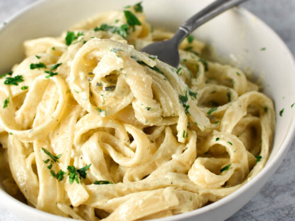

A delicious bowl of Fetuccini alfredo with cheese and shrimp
The preferred meal of any italian man on a special ocassion
Only the freshest fetuccini and shrimp caught that day is used
Ingredients
- Fetuccini
- Cheese
- Shrimp
- Milk
- Salt
- Pepper
- Butter
Recipe Instructions
- Bring water to a boil and add salt
- Add cooked pasta and wait 9-11 minutes for pasta to cook
- While pasta is cooking make alfredo sauce by adding milk, cheese, salt, pepper and butter
- When pasta is cooked add alfredo sauce to the pasta
- Finally fry up some fresh shrimp in butter and salt
Return to the Main Page